Package GeologicStructure
GeologicStructures are a configuration of matter in the Earth based on describable inhomogeneity, pattern, or fracture in an Earth Material. The scale of geological structures ranges from microscopic (micron-scale) to megascopic (km-scale). Examples of such inhomogeneities include fractures, mineral grain boundaries, and boundaries between parts of the rock with different particle geometry (texture) or composition. Geologic structure is grounded in relationships between parts of a rock or rock body. As used here, it includes sedimentary structures. The identity of a Geologic Structure is independent of the material that is the substrate for the structure. There are almost always strong dependencies between the nature of the Earth Material substrate and the kinds of Geological Structure that may be present. A disaggregated heap of particles does not have structure, and can only be described in terms of the mineralogy and geometrical character of the constituent particles. Geologic Structures are more likely to be found in, and are more persistent in, consolidated materials than in unconsolidated materials. Properties like "clast-supported", "matrix-supported", and "graded bed" that do not involve orientation are considered kinds of Geologic Structure because they depend on the configuration of parts of a rock body.
Class Summary |
|
| <<FeatureType>> Classes | |
Contact
<<FeatureType>>
|
Very general concept representing any kind of surface separating two geologic units including primary boundaries such as depositional contacts, all kinds of unconformities, intrusive contacts, and gradational contacts, as well as faults that separate geologic units. Permeability of contacts still needs to be modeled; considered out of scope for GeoSciML2. Bedding measured as discrete surfaces in the case that those are the feature of interest (e.g. individual cross set surfaces for paleocurrent analysis) should be represented here. |
DisplacementEvent
<<FeatureType>>
|
A description of the age, environment and process of a shear displacement event |
FaultSystem
<<FeatureType>>
|
A composite structure that is an aggregation of genetically related instances of Faults and/or DuctileShearStructures. A FaultSystem is composed of individually identified and mapped Faults and/or DuctileShearStructures that are considered distinct ShearDisplacementStructures, that generally form overlapping, anastomosing patterns in which, at any point along the fault system, multiple fault strands are identified and each considered important at the scale of description. Displacement and other descriptive data may be assigned at the 'fault segment', 'fault', or 'fault system level'. |
Fold
<<FeatureType>>
|
One or more systematically curved layers, surfaces, or lines in a rock body. Fold denotes a structure formed by the deformation of a GeologicStructure to form a structure that may be described by the translation of an abstract line (the fold axis) parallel to itself along some curvilinear path (the fold profile). Folds have a hinge zone (zone of maximum curvature along the surface) and limbs (parts of the deformed surface not in the hinge zone). Folds are described by an axial surface, hinge line , profile geometry, the solid angle between the limbs, and the relationships between adjacent folded surfaces if the folded structure is a Layering fabric (similar, parallel). |
FoldSystem
<<FeatureType>>
|
A collection of congruent folds (axis and axial surface are parallel) produced by the same tectonic event. Sometimes referred to as a "Fold Train". |
Foliation
<<FeatureType>>
|
A planar arrangement of textural or structural features in any type of rock. Includes any of a wide variety of penetrative planar geological structures that may be present in a rock. Examples include schistosity, mylonitic foliation, penetrative bedding structure (lamination), and cleavage. Following the proposed definition of gneiss by the NADM Science Language Technical Team, penetrative planar foliation defined by layers > 5 mm thick is considered Layering. Bedding as a fabric representing the average orientation of paleodepositional surface should be encoded through the foliationType; might apply to bedding that is layering or a foliation without layering (e.g. clast alignment in amalgamated beds). |
Fracture
<<FeatureType>>
|
Fractures are cracks in the earth surface. If there is no displacement it is a joint. If there is displacement and you are in the brittle zone it is a fault. In the ductile zone, a fracture with displacement with fracture is called a shear. FaultSurface as a separate class is not considered necessary for GeoSciML 2. Recording observations on FaultSurface should be in observation and measurement. The observation needs to be able to distinguish the type of measurement made (PropertyType) |
GeologicStructure
<<FeatureType>>
|
A configuration of matter in the Earth based on describable inhomogeneity, pattern, or fracture in an EarthMaterial. The identity of a GeologicStructure is independent of the material that is the substrate for the structure. Properties like "clast-supported", "matrix-supported", and "graded bed" that do not involve orientation are considered kinds of GeologicStructure because they depend on the configuration of parts of a rock body. Includes sedimentary structures. The general GeologicRelation is used to associate penetrative GeologicStructures with GeologicUnits. |
Joint
<<FeatureType>>
|
Fracture across which there is no displacement at the scale of interest. |
Layering
<<FeatureType>>
|
Planar foliation defined by a tabular succession of layers > 5 mm thick. This definition is based on the proposed definition of gneiss by the NADM Science Language Technical Team, so that the GeologicStructure characteristic of gneiss is layering. The committee discussed the possibility that layering should be considered a kind of foliation, but the majority opinion was that it is a different kind of structure. Kept so that instance documents have a "Layering" tag |
Lineation
<<FeatureType>>
|
GeologicStructure defined by aligned elongate elements. Lineation connotes a pervasive linear structure. Includes: flow lines, scratches, striae, slickenlines, linear arrangements of elongate components in sediments, fold hinges (when abundant and closely spaced), elongate minerals, crinkles, and lines of intersection between penetrative planar structures. Class also includes discrete linear structures like boudin, channel axis, tool marks. |
NonDirectionalStructure
<<FeatureType>>
|
Structures present in geology that do not have a preferred orientation Includes small-scale structures that are characteristic of the geologic unit, e.g. herringbone crossbedding, mudcracks, graded bedding, planar lamination, miarolitic cavities, nebulitic structure, trace fossils, fossil molds |
ShearDisplacementStructure
<<FeatureType>>
|
A shear displacement structure includes all brittle to ductile style structures along which displacement has occurred, from a simple, single 'planar' brittle or ductile surface to a fault system comprised of 10's of strands of both brittle and ductile nature. This structure may have some significant thickness (a deformation zone) and have an associated body of deformed rock that may be considered a DeformationUnit |
| <<Type>> Classes | |
BoundaryRelationship
<<Type>>
|
Defines the two GeologicUnits that make up the relationship described by the Contact |
DefiningStructure
<<Type>>
|
Describes the related GeologicStructure which defines a DeformationUnit. That is, a geologic unit defined by its deformation character, eg a shear zone. |
| <<DataType>> Classes | |
DisplacementValue
<<DataType>>
|
Trying to express the displacement on a fault with respect to a planar approximation of its shape |
NetSlipValue
<<DataType>>
|
The total amount of slip displacement |
SeparationValue
<<DataType>>
|
The amount of separation displacement |
SlipComponents
<<DataType>>
|
Representation of slip as vector resolved into components resolved into reference frame in which horizontal axes are parallel and perpendicular to the strike of the fault. At least one of heave, horizontalSlip, or throw must not be null. |
| <<CodeList>> Classes | |
ContactTypeTerm
<<CodeList>>
|
Refers to a vocabulary of terms describing types of geological contacts |
DeformationStyleTerm
<<CodeList>>
|
A vocabulary of terms to describe the style of deformation, ie brittle (fault, breccia), ductile (shear), brittle-ductile, unknown. |
FaultTypeTerm
<<CodeList>>
|
A vocabulary of terms describing the type of shear displacement structure (eg; thrust fault, normal fault, wrench fault) |
FoldProfileTypeTerm
<<CodeList>>
|
Refers to a vocabulary of terms specifying concave/convex geometry of fold relative to earth surface, and relationship to younging direction in folded strata if known. antiform, synform, neutral, anticline, syncline, monocline, ptygmatic |
FoliationTypeTerm
<<CodeList>>
|
Refers to a vocabular of terms defining the type of foliation (eg, crenulation cleavage, gneissic layering, slaty cleavage, schistosity, etc) |
LineationTypeTerm
<<CodeList>>
|
Refers to a vocabulary of terms describing the type of lineation. Examples include: flow lines, scratches, striae, slickenlines, linear arrangements of elongate components in sediments, elongate minerals, crinkles, and lines of intersection between penetrative planar structures. |
MovementSenseTerm
<<CodeList>>
|
Refers to a vocabulary of terms describing the sense of movement on a shear displacement structure |
MovementTypeTerm
<<CodeList>>
|
Refers to a vocabulary of terms describing the type of movement (eg, dip-slip, strike-slip) |
NonDirectionalStructureTypeTerm
<<CodeList>>
|
Refers to a vocabulary of terms describing types of non-directional structures (eg, miarolitic cavity, flame structure, load cast, shatter cone, trace fossil, fossil mold, etc) |
Tagged Values |
||
| Tag | Value | Notes |
| classMap | https://www.seegrid.csiro.au/subversion/GeoSciML/geologicStructure/trunk/classmap/ClassMap_GeologicStructure_GeoSciML_v3.xml | |
| gmlProfileSchema | #NOTES#Description: URL of the schema location of a GML profile (optional) | Description: URL of the schema location of a GML profile (optional) |
| owner | IUGS Commission for the Management and Application of Geoscience Information | |
| schemaLocation | http://schemas.geosciml.org/geologicstructure/3.0/geologicStructure.xsd | |
| targetNamespace | http://xmlns.geosciml.org/GeologicStructure/3.0 | Default: FIXME Description: Target XML namespace of the application schema |
| version | 3.0.0 | Default: FIXME Description: Current version of the application schema |
| xmlns | gsmlst | Default: FIXME Description: Namespace prefix to be used as short form of the target namespace |
| xsdDocument | geologicStructure.xsd | Default: FIXME Description: Name of an XML Schema document to create representing the content of this package |
| xsdEncodingRule | iso19136_2007_INSPIRE_Extensions | Values: iso19136_2007 | iso19139_2007 | iso19136_2007_INSPIRE_Extensions Default: iso19136_2007 Description: XML Schema encoding rule to apply |
UML Diagram: Context Diagram : NonDirectionalStructure
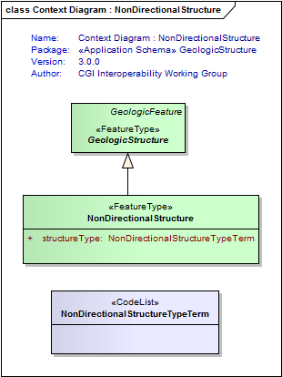
UML Diagram: Context Diagram : ShearDisplacementStructure
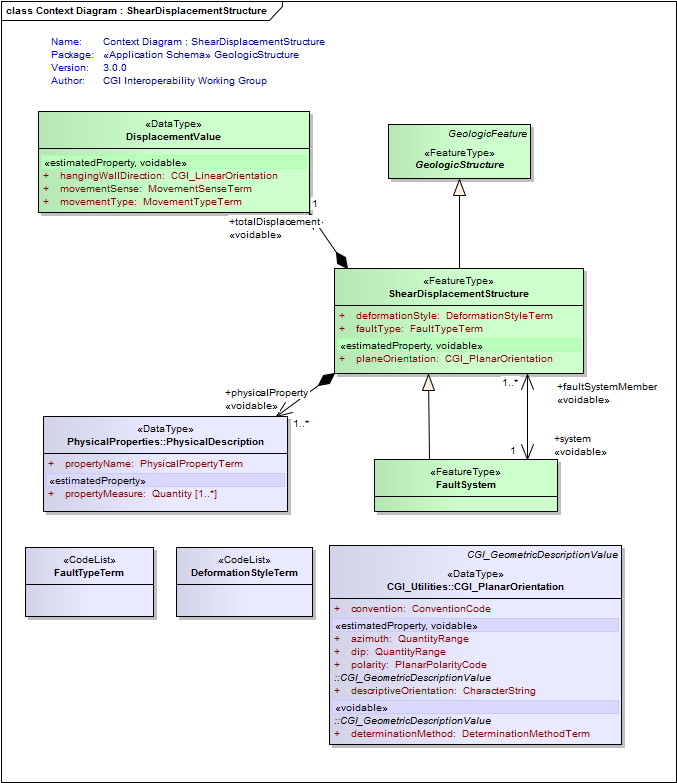
UML Diagram: Context Diagram : Fold
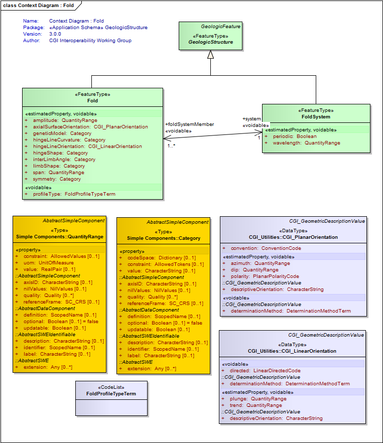
UML Diagram: Context Diagram : Lineation
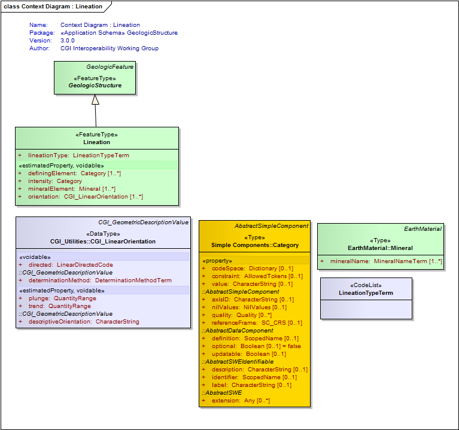
UML Diagram: Context Diagram : Contact
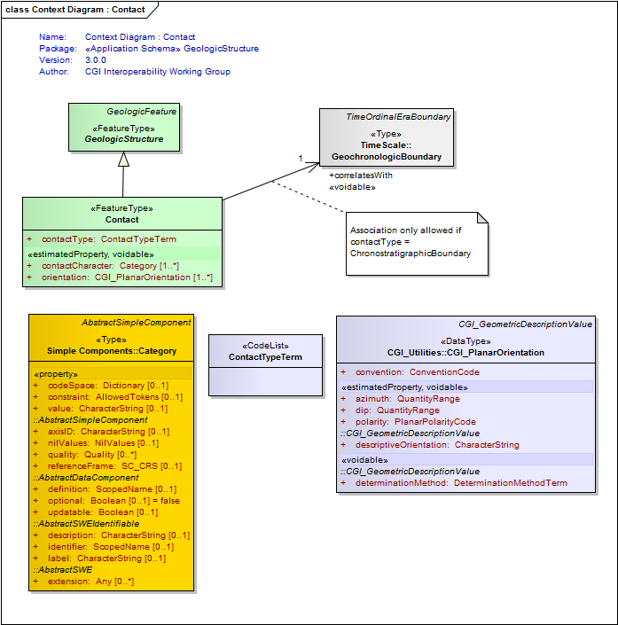
UML Diagram: Summary Diagram : Geologic Structure
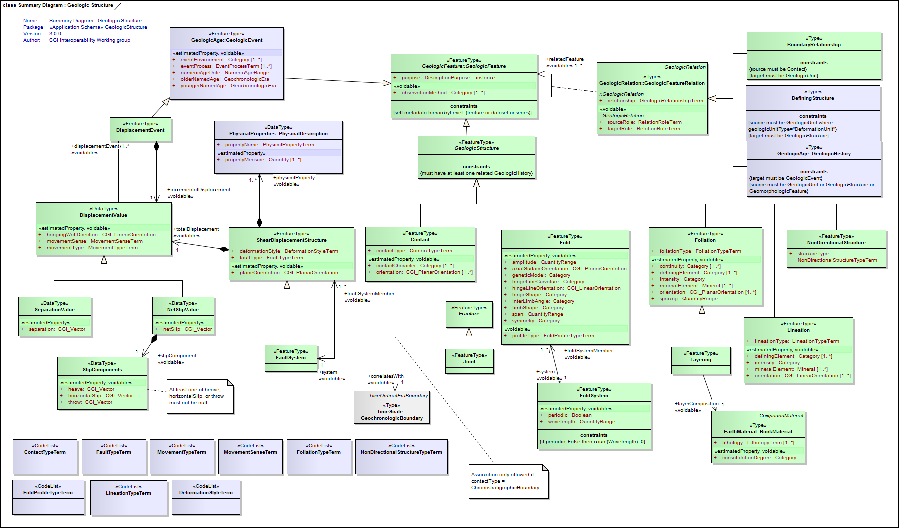
UML Diagram: Context Diagram : DisplacementValue
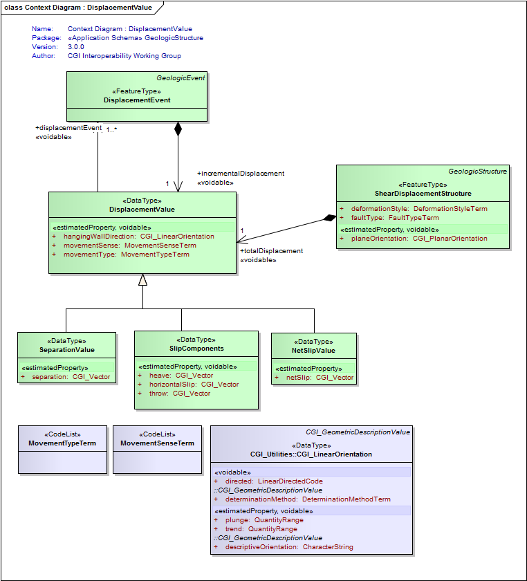
UML Diagram: Context Diagram : FoldSystem
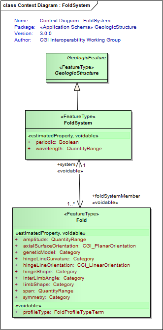
UML Diagram: Context Diagram : Foliation
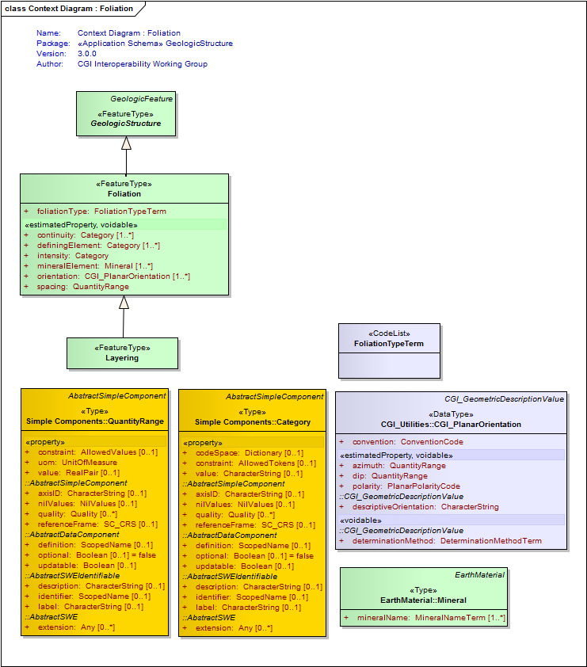
UML Diagram: Context Diagram : GeologicStructure
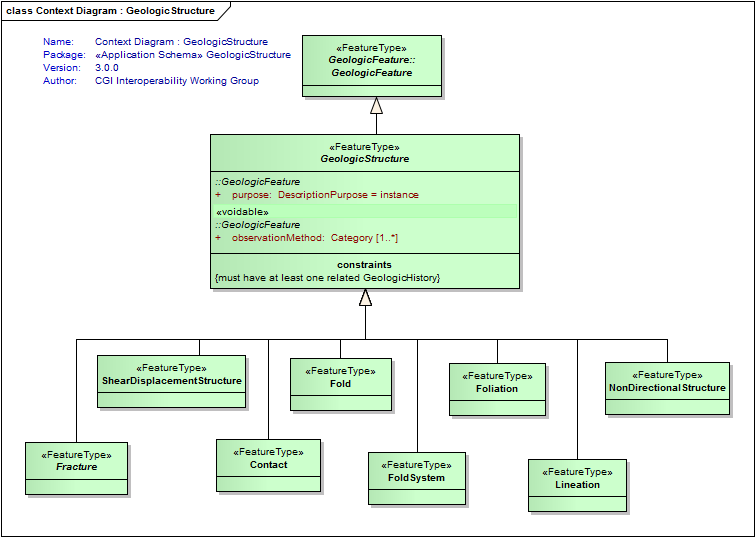
UML Diagram: Context Diagram : FaultSystem
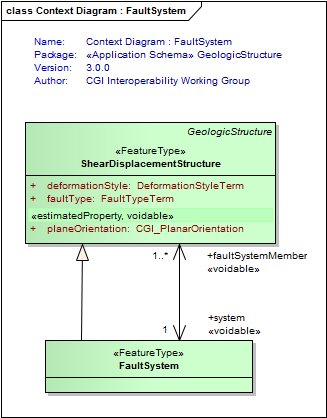
UML Diagram: Context Diagram : Fracture
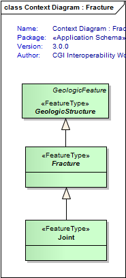
UML Diagram: Context Diagram : Joint
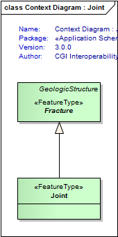
UML Diagram: Context Diagram : Layering
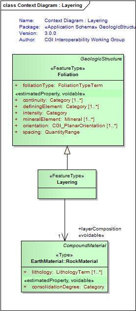
UML Diagram: Context Diagram : NetSlipValue
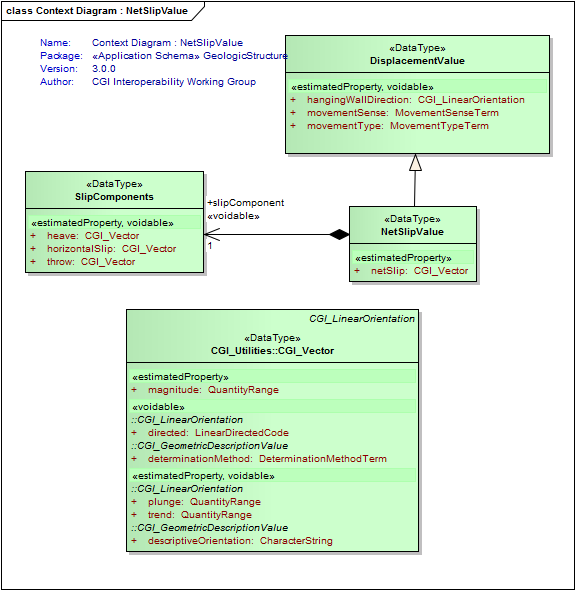
UML Diagram: Context Diagram : SeparationValue
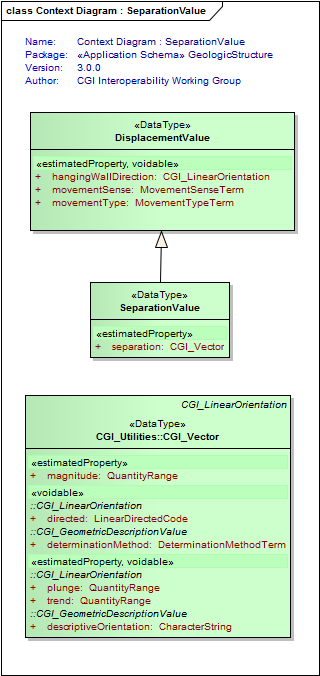
UML Diagram: Context Diagram : SlipComponents
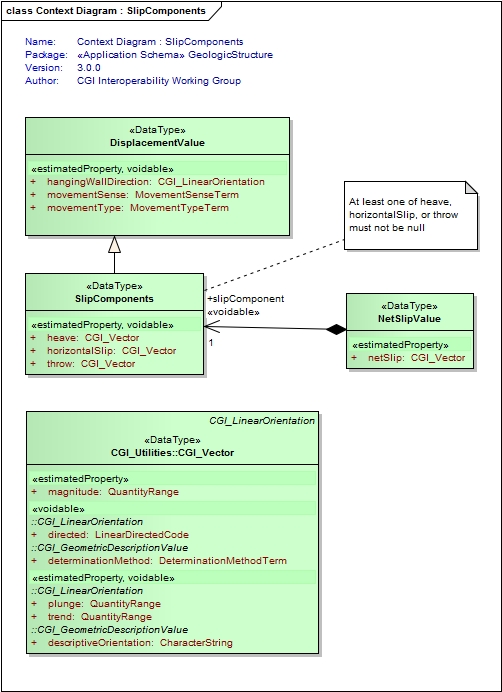
UML Diagram: Context Diagram : BoundaryRelationship
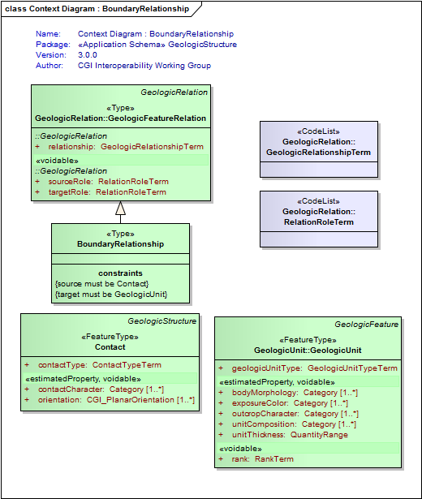
UML Diagram: Context Diagram : DefiningStructure
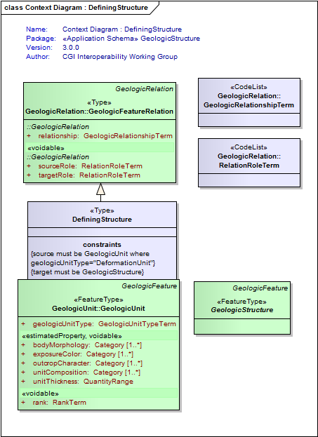
UML Diagram: GeologicStructure package dependencies
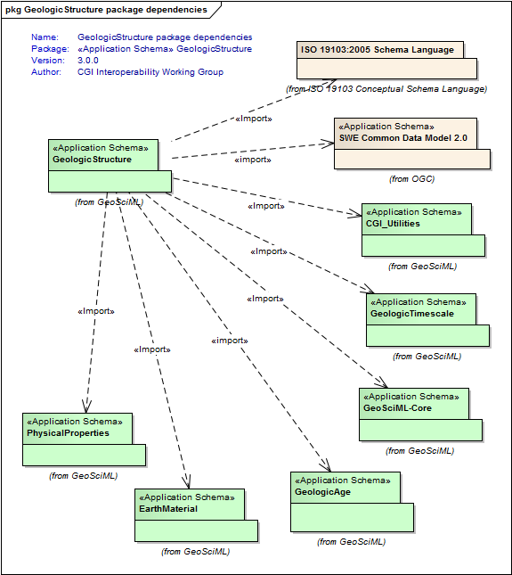